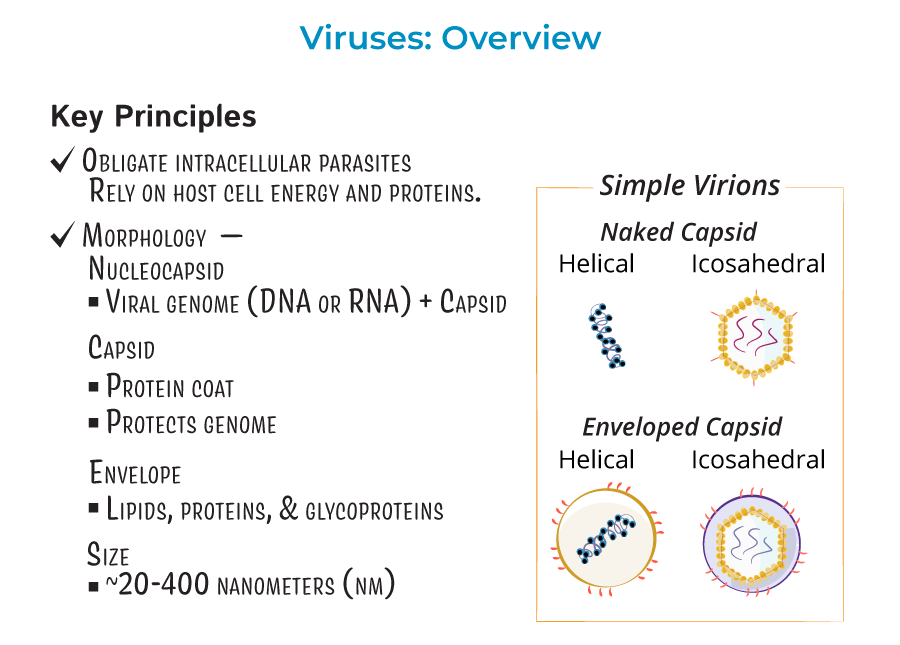

Virology Basics
This page introduces the fundamental concepts of modern virology.
Key Takeaways
- Viruses are not living organisms and must infect host cells to reproduce
- All viruses contain genetic material (DNA or RNA) inside a protective capsid
- RNA viruses mutate faster than DNA viruses, allowing quicker adaptation
- Enveloped viruses are less stable outside the body, while non-enveloped viruses are more resistant
- Understanding viral structure and classification helps scientists predict transmission, mutation, and treatment strategies
What is a Virus?
A virus is a microscopic infectious agent that is unable to reproduce independently. Instead, it must infect a living host cell and use the host’s machinery to replicate. [1]
Virus Structure
Most viruses consist of genetic material, either DNA or RNA, enclosed within a protein coat known as a capsid. In some viruses, this structure is further surrounded by a lipid envelope derived from the host cell. [1]
How Viruses Differ from Bacteria
Unlike bacteria, viruses are not living cells. They lack the ability to carry out metabolism and cannot reproduce independently, requiring a host cell for replication.[2]
Classification Overview
Viruses are classified based on their genetic material and structural characteristics. These classifications help scientists understand viral replication, transmission, and susceptibility to treatments. [3]

🧬 DNA vs RNA Viruses
DNA viruses generally replicate with higher accuracy and mutate more slowly, often relying on the host cell nucleus. In contrast, RNA viruses typically replicate more rapidly and exhibit higher mutation rates, allowing for faster adaptation. [4]
Comparison of DNA and RNA Viruses
| Feature | DNA Viruses | RNA Viruses |
|---|---|---|
| Genetic Material | DNA | RNA |
| Mutation Rate | Generally lower | Generally higher |
| Replication Accuracy | Higher | Lower |
| Replication Location | Usually in the host nucleus | Usually in the host cytoplasm |
| Genome Stability | More stable | Less stable |
| Examples | Herpesviruses, Adenoviruses | Influenza virus, SARS-CoV-2 |
Comparison adapted from standard virology texts. [5]
🦠 Enveloped vs Non-Enveloped Viruses
Enveloped viruses possess a lipid membrane that aids in host cell entry but makes them more susceptible to environmental conditions. Non-enveloped viruses lack this membrane and are generally more resistant to heat, disinfectants, and dehydration. [3]
Comparison of Enveloped and Non-Enveloped Viruses
| Feature | Enveloped Viruses | Non-Enveloped Viruses |
|---|---|---|
| Outer Structure | Lipid envelope surrounding the capsid | Protein capsid only (no envelope) |
| Environmental Stability | Less stable outside the host | More stable outside the host |
| Sensitivity to Disinfectants | Highly sensitive to detergents and alcohol | More resistant to disinfectants |
| Transmission | Often spread via close contact, fluids, or droplets | Often spread via surfaces, food, or water |
| Survival Outside Host | Shorter survival time | Longer survival time |
| Examples | Influenza virus, HIV, SARS-CoV-2 | Norovirus, Adenovirus, Poliovirus |
Comparison adapted from standard virology references. [3]
🔬 Why Modern Virology Matters
Modern virology focuses on understanding how viruses evolve, spread, and interact with hosts in an increasingly interconnected world. Advances in this field are essential for public health and disease prevention. [5]
⚠️ Variants and Mutation
Many viruses, particularly RNA viruses, undergo frequent mutations during replication. These genetic changes can lead to the emergence of variants with differing transmissibility, severity, or resistance to immune responses. [4]
🦝 Zoonotic Spillover
Zoonotic spillover occurs when a virus is transmitted from an animal host to humans. Increased global travel, environmental disruption, and human contact with wildlife have heightened the risk of such events. [6]
💉 Vaccines and Antivirals
Advances in virology have enabled the rapid development of vaccines and targeted antiviral therapies. These interventions play a critical role in controlling viral outbreaks and reducing disease severity. [7]